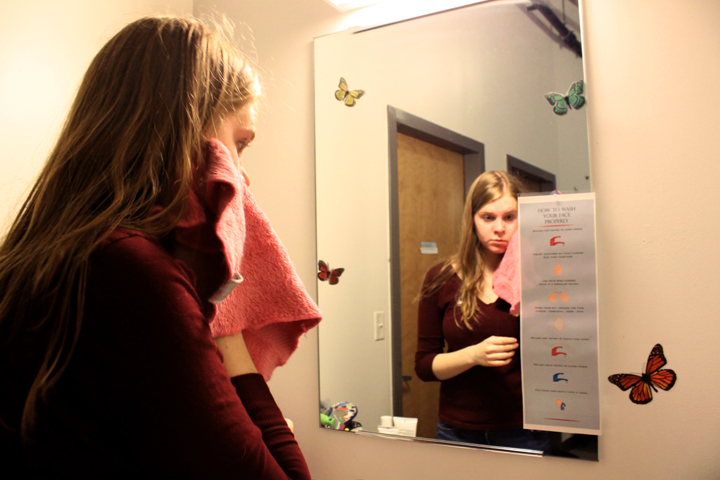

How to Wash Your Face Properly
Washing one's face is a bland activity, but it is a daily activity that is never overlooked. Part of a morning and/or nightly routine, a person may a couple of minutes to make sure one's face is clear of blackheads and have flawless skin. With this visual that lists specific but minimal step-by-step instructions to wash one's face, the person is relearning something that was once habitual and mechanic. I included the word 'properly' to showcase the idea that there is only a single way to perform this task right. This activity becomes centralized to perfection and intentional care. By making it accessible in the bathroom sinks, the person is more aware of the process it takes for one to actually have clear skin.
